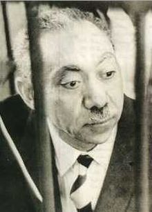
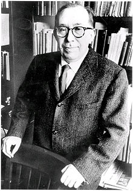

< < < Back
American Neoconservatives Were Supposed To Save The World, But For Whom? – Return Of Kings
We are living in a political age of fear. Western governments continuously push fear-based propaganda of a shadowy network of terrorism while stripping individual liberties. In the USA, first came the dubiously named Patriot Act and then NDAA, which allows unwarranted spying on citizens and tracking of personal information such as financial records by law enforcement, and also allows citizens to be detained indefinitely for merely being suspected of a crime. In addition, it says that you are a potential terrorist if you “blame the government,” “travel an illogical distance” or “pay with cash.”
Then there’s Obamacare, giving the IRS power over your healthcare decisions and other measures which attack freedoms guaranteed in the Bill of Rights, including the introduction of the term hate speech into the public discourse which is nothing more than a thinly veiled attack on the First Amendment. Is there a real threat necessitating these measures? Or are governments only seeking to increase their power and authority over our lives?
Many of the cultural issues plaguing the West and now discussed on the manosphere have actually been playing out over the last 75 years or more in the political realm, hidden from the public but well known among political operatives.
This leads us to the introduction to one of the most important films of our generation, The Power of Nightmares by Adam Curtis. The film was originally produced for BBC in 2004, during the height of the politics of fear post-9/11. YouTube has been removing the film based on spurious copyright issues, but a Google search will turn up other places where you can watch it online.
The powerful introduction to The Power of Nightmares states the following:
In the past, politicians promised to create a better world. They had different ways of achieving this, but their power and authority came from the optimistic visions they offered their people. Those dreams failed and today people have lost faith in ideologies. Increasingly, politicians are seen simply as managers of public life, but now they have discovered a new role that restores their power and authority. Instead of delivering dreams, politicians now promise to protect us from nightmares.
They say that they will rescue us from dreadful dangers that we cannot see and do not understand. And the greatest danger of all is international terrorism, a powerful and sinister network with sleeper cells in countries across the world, a threat that needs to be fought by a War on Terror. But much of this threat is a fantasy, which has been exaggerated and distorted by politicians. It’s a dark illusion that has spread unquestioned through governments around the world, the security services and the international media. This is a series of films about how and why that fantasy was created, and who it benefits.
At the heart of the story are two groups: the American neoconservatives and the radical Islamists. Both were idealists who were born out of the failure of the liberal dream to build a better world, and both had a very similar explanation of what caused that failure. These two groups have changed the world, but not in the way that either intended. Together, they created today’s nightmare vision of a secret organized evil that threatens the world, a fantasy that politicians then found restored their power and authority in a disillusioned age. And those with the darkest fears became the most powerful.
The Birth Of Modern Islamist And Neoconservative Thinking

Sayyid Qutb, known for his work on what he believed to be the social and political role of Islam
The story begins with Sayyid Qutb, the founder of modern Islamist thinking. Qutb came to the U.S. in 1948 from Egypt, a nation that was rapidly Westernizing after World War II. He came on a scholarship to study the U.S. education system, but became disgusted with what he saw as the corruption of morals and values in American society caused by individualism, liberalism and materialism. He returned to Egypt in 1950 and set out to prevent these ideals from taking over his own country.
Qutb wanted to create a moral framework to stop the infiltration of American culture into Egypt and Islamic countries at large. He did this by becoming politically active and joining the Muslim Brotherhood. The group wanted Egyptian society governed by Islam rather than the secularism that was infiltrating from the West. The Muslim Brotherhood later supported a revolution against then Egyptian President Nasser based on these desires. Responding to this threat to his power, President Nasser formed an alliance with the CIA and Qutb was later arrested and put into prison.
While in prison, torturers trained by the CIA tortured Qutb. One of their torture methods was covering him with animal fat and unleashing a pack of dogs on him. This, and other types of CIA-influenced torture had a radicalizing influence on Qutb. To him, it only proved that Western culture was in worse condition than he had originally expected.
To Qutb, Western culture had fallen under jahilliyah—a state of barbarous ignorance. He believed the West had come to worship materialism over other philosophies, and that a dramatic change of course was needed to cleanse jahilliyah from Islamic culture, rapidly spreading in Egypt. His group wanted to kill government leaders they thought were infected by the West’s jahilliyah. Qutb was later hanged for plotting to overthrow the Egyptian government but his ideas spread, and they had a powerful influence on Ayman Zawahiri, the current leader of Al-Qaeda.

Leo Strauss, father of neoconservatism
At the same time, Leo Strauss, whose political philosophy led to neoconservatism, was coming to some of the same conclusions as Qutb. He believed Western liberalism would lead to legalism, totalitarianism, and chaos because it questioned all moral values and all truths. This created a nihilistic culture where nothing is true and everything is permitted. Strauss feared this cultural nihilism and degeneracy would tear apart society.
Strauss said the prosperous society America had become contained the seeds of its own destruction. He believed powerful myths and necessary illusions were needed (echoing Reinhold Niebuhr) to keep the society from tearing itself apart. These myths would be promoted by government officials in public, while there was no need for the mythmakers to believe the myths themselves. These myths, Strauss thought, would keep individualism in check and the society from disintegrating.
Strauss’ Neoconservatism would influence the United States government starting in the 1970s through today.
Strauss Influences Neoconservatives
As a prosperous but increasingly detached from traditional values America began to run into serious problems in the 1960s, and later the Great Society dream seemed to end in violence and hatred, the big political question in Washington shifted to whether the liberal, individualist policies were causing the social breakdown. Irving Kristol, the “godfather” of neoconservativism, sums up the thinking of the time.
If you had asked any liberal in 1960, we are going to pass these laws, these laws, these laws, and these laws, mentioning all the laws that in fact were passed in the 1960s and 70s, would you say crime will go up, drug addiction will go up, illegitimacy will go up, or will they go down? Obviously, everyone would have said, they will go down. And everyone would have been wrong. Now, that’s not something that the liberals have been able to face up to. They’ve had their reforms, and they have led to consequences that they did not expect and they don’t know what to do about.
Strauss and other neoconservatives believed individual freedom was causing the chaos, as people pursued their own selfish interests instead of those which mutually benefit themselves and society, leading to conflict. The ideas Strauss had were studied by men who were to become very influential in the U.S. government: Dick Cheney, Donald Rumsfeld, Paul Wolfowitz and Bill Kristol, son of Irving Kristol. They believed the philosophical grounds for liberal democracy had been weakened, and wanted to give the masses a new purpose by creating a new myth of America as having a unique destiny battling against evil in the world.
The myth they developed claimed America was the only force for good in the world, and it would spread this goodness through the world by spreading democracy. (Never mind that America was overthrowing democratically-elected leaders at the same time this doxy was being preached.) There was only one problem with this myth: neoconservatives needed to invent an ever-present enemy since the messages they would be giving to the masses boiled down to a battle between good and evil.
That enemy would first become the Soviet Union before becoming an obscure network of terrorists a generation later. While the Cold War had already been ongoing, the neoconservatives set out to maximize their power and influences by making the Soviet Union seem even more vicious and extreme than it actually was.
The neoconservative view was in stark contrast to the global interdependence championed by Henry Kissinger, but after Watergate and the defeat of the U.S. in Vietnam, there was a crisis of confidence in this school of thought. In a shift away from Kissinger’s ruthless but pragmatic vision of the need for a balance of power, the newly empowered neoconservatives wanted to move away from the idea of global interdependence and towards mythmaking.
Along came Dick Cheney, Paul Wolfowitz, Donald Rumsfeld and Bill Kristol to spread the new ideology. Dick Cheney first came to power as Gerald Ford’s White House Chief of Staff, one of several neoconservatives in that administration. He would later become the Secretary of Defense under George H.W. Bush and eventually the Vice President.
The Strauss “Necessary Myth” Becomes “Truth”
Rumsfeld became Secretary of Defense in 1975 under President Gerald Ford. Rumsfeld wanted to create a more terrifying view of the Soviet Union and the prospect for nuclear war. His claim was whatever the USSR said publicly, its real goal was to conquer the United States. Rumsfeld gave an important speech in 1976 which incorporated many of the “good vs. evil” themes Strauss thought were necessary to provide the public with a good guy vs. bad guy scenario.
The Soviet Union has been busy. They’ve been busy in terms of their level of effort; they’ve been busy in terms of the actual weapons they’ve been producing; they’ve been busy in terms of expanding production rates; they’ve been busy in terms of expanding their institutional capability to produce additional weapons at additional rates; they’ve been busy in terms of expanding their capability to increasingly improve the sophistication of those weapons. Year after year after year, they’ve been demonstrating that they have steadiness of purpose. They’re purposeful about what they’re doing. Now, your question is, what ought one to be doing about that?
The CIA of the time said there was no truth to Rumsfeld’s claims, that it was complete fiction. As often happens in politics, reality has very little to do with policy making. Rumsfeld persuaded President Ford to set up a committee to investigate the Soviet threat. This committee was called Team B, led by Paul Wolfowitz, who claimed the Soviet Union had weapon systems that were later proven not to exist. Team B said the weapons were so advanced they could not even be detected. In eerie similarities to the later weapons of mass destruction claims that led the U.S. into a bloody war with Iraq in 2003, Plan B said there was an invisible threat from the Soviet Union even though there was no evidence for it.
Neocons would later go so far as to claim terrorism was coordinated by Moscow as an attempt to take over the world during the Reagan administration. They said all terrorist groups were part of a coordinated network of terror run by the Soviet Union. (If this sounds familiar, that’s because it is the exact same playbook used a generation later during the War on Terror!)
The CIA responded by saying the claim that the Soviet Union was behind a secret network of terror was another neocon fantasy. That is, until William Casey took over the CIA. Casey based CIA policy on The Terror Network book, which was full of black propaganda and was totally fabricated by the CIA. The neocons had to know the terror network didn’t exist, because the CIA itself had made the entire story up.
In a triumph for the neoconservatives, the fantasies created by Rumsfeld and Wolfowitz became reality, at least as far as public policy was concerned.

Paul Wolfowitz and Donald Rumsfeld, spinning fantasies into reality
Qutb’s Goal Realized: President Sadat Assassinated
Around the same time, Ayman Zawahiri became increasingly concerned about Qutb’s predictions about the corrupting influence of Western culture in the Middle East. Zawahiri was convinced it was time to overthrow the secular, Western-backed regime of Egyptian President Anwar Sadat.
Zawahiri was particulary enraged by Sadat’s trip to negotiate a peace treaty with the Israelis, which Zawahiri claimed meant Sadat was no longer a Muslim and could be legitimately killed through jihad. Also, Ayatollah Khomeini came to power in 1979 as the First Supreme Leader of Iran. To Zawahiri, it meant his dream of creating an Islamist, non-Westernized nation in Egypt was possible. Ayatollah Khomeini talked about the corrupting influence of individualism and liberalism.
You who want freedom for everything, the freedom that will corrupt our country, corrupt our youth, and freedom that will pave the way for the oppressor—freedom that would drag our country to the bottom.
Sadat was later assassinated by Zawahiri’s group in an effort to create an fundamentalist state in Egypt. The assassination failed to establish an Islamic state, which only made Zawahiri take an even more extreme stance. Zawahiri was sentenced to 3 years in prison, and like Qutb, became even more radicalized by torture while in prison.
The Religious Right Makes Their Move
Echoing the desires of Qutb and Zawahiri to combine fundamentalism and government, the Religious Right was mobilized by neoconservatives and were in part responsible for Ronald Reagan’s landslide victory in 1980. Up until the Reagan era, neoconservativism had been a purely intellectual movement. Irving Kristol gave his opinion on why he thinks religion is necessary for a stable society. This gives us insight as to why the neocons embraced organized religion.
The notion that a purely secular society can cope with all of the terrible pathologies that now affect our society, I think has turned out to be false. And that has made me culturally conservative. I mean, I really think religion has a role now to play in redeeming the country. And liberalism is not prepared to give religion a role. Conservatism is, but it doesn’t know how to do it.
Religious leaders joined the chorus denouncing the Soviet Union as the force for evil in the world, while the U.S. was branded as the force for good in the world. In reality, neither country was purely good or purely evil.
Richard Pipes, one of the heads of Team B, the group who totally fabricated allegations against the Soviet Union, was appointed to Reagan’s administration. Neocons initially faced opposition from Reagan but he later adopted many of their ideals. The myths Strauss said were so desperately needed were now becoming public policy and political reality. Neoconservatives had successfully created the idea that America’s purpose was to spread democracy throughout the world. Meanwhile, Islamists were becoming ever more radical in their desire to eradicate jahilliyah from their society and create an Islamic state.
Part 2 of this series will focus on the developments through the rest of the Reagan and subsequent Bush I, Clinton, and Bush II administrations. The neocons and Islamists team up in the 1980s, but when the Soviet Union collapses neoconservatives need a new enemy. As Islamists became more radical, the neoconservatives turn them into public enemy number one even though Al-Quaeda’s actual power and reach is vastly overblown by the American government.
Read more: The Real Nature Of Politics